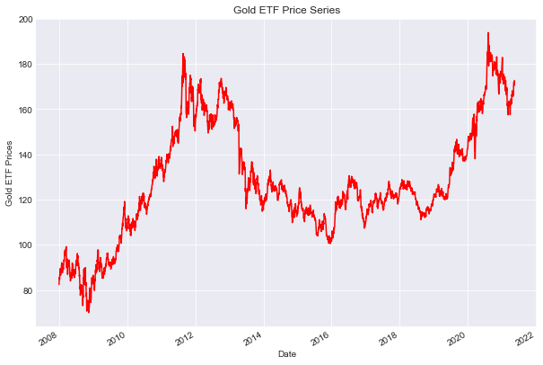
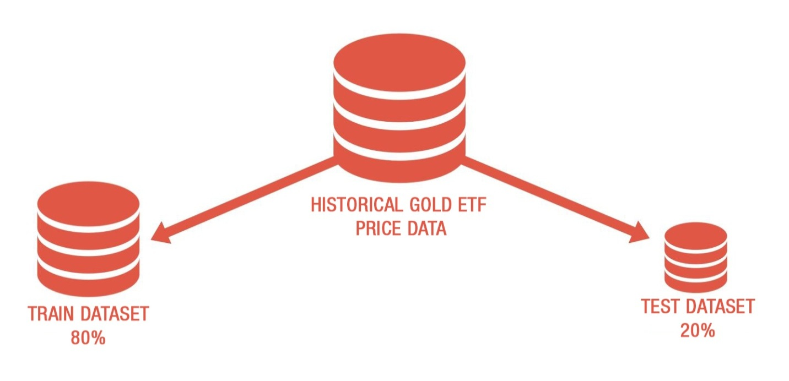
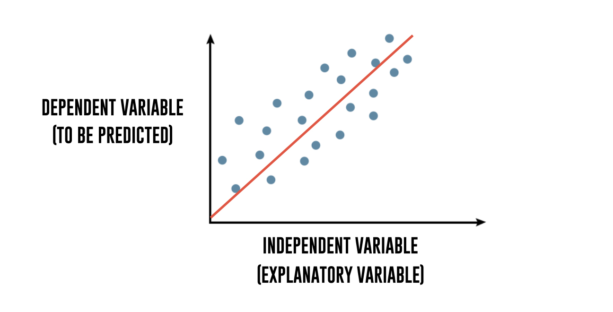
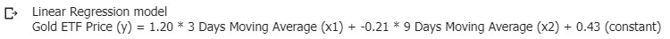
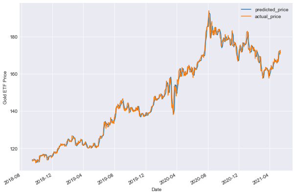
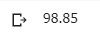
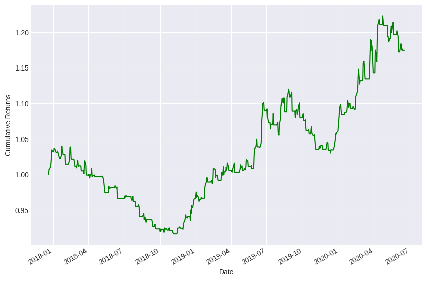
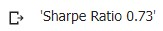
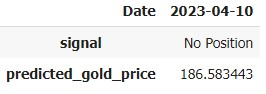

การทำนายราคาทองคำโดยใช้ Python
เขียนโดย Ishan Shah และ Rekhit Pachanekar | แปลและอธิบายเพิ่มโดย อันติกา อำนรรฆสรเดช
เป็นไปได้หรือไม่ที่เราจะทำนายราคาทองคำล่วงหน้า?
แน่นอน เราสามารถใช้เทคนิค regression ของ machine learning มาใช้ในการทำนายราคาโลหะที่มีค่าสูงสุดหนึ่งในโลก นั่นก็คือ ทองคำ
โดยเราจะสร้างโมเดล linear regression ของ machine learning ที่ใช้ข้อมูลราคาของ Gold ETF(GLD) ในอดีตเพื่อทำนายราคาทองคำในวันถัดไป
*GLD เป็น ETF ที่ใหญ่ที่สุดในการลงทุนโดยตรงเกี่ยวกับทองคำ
*ETF หรือ Exchange Traded Fund คือ กองทุนรวมดัชนี
ในการพยายามทำนายราคาทองคำด้วย machine learning ด้วยภาษา Python เราจะครอบคลุมหัวข้อดังต่อไปนี้
เราจะเรียกใช้งานไลบรารีต่างๆที่จำเป็นสำหรับการสร้างโมเดล machine learning และอ่านข้อมูล Gold ETF จากแหล่งข้อมูลที่เราเลือก
เราจะกำหนดตัวแปรที่อธิบายได้ว่ามีผลต่อราคาของ Gold ETF ในแต่ละวัน เช่น ราคาเปิด,ราคาปิด,ปริมาณการซื้อขาย ฯลฯ
เราจะกำหนดตัวแปรที่ต้องการทำนาย ซึ่งในที่นี้คือราคา Gold ETF ในวันถัดไป
เราจะแบ่งข้อมูล Gold ETF เป็นชุดข้อมูลสำหรับการฝึกโมเดล(training set) และชุดข้อมูลสำหรับทดสอบโมเดล(testing set) เพื่อวัดประสิทธิภาพของโมเดล
เราจะสร้างโมเดล linear regression ที่ใช้ตัวแปรอธิบายเพื่อทำนายราคา Gold ETF ในวันถัดไป
เราจะใช้โมเดลที่สร้างขึ้นมาเพื่อทำนายราคา Gold ETF ในวันถัดไป
เราจะพล็อตกราฟของผลตอบแทนสะสมจากการซื้อขาย Gold ETF ตามเวลา
นำเข้าไลบรารีและอ่านข้อมูล Gold ETF
เริ่มต้นด้วยการ import libraries ทั้งหมดที่จำเป็นต้องใช้ในการประมวลผลวิธีนี้
จาก sklearn นำเข้า LinearRegression เพื่อใช้ในการสร้างโมเดล Linear Regression
นำเข้า pandas และ numpy เพื่อใช้ในการจัดการข้อมูล
นำเข้า matplotlib และ seaborn เพื่อใช้ในการพล็อตกราฟ
ใช้ yfinance เพื่อดึงข้อมูลการซื้อขายหุ้น Gold ETF จากเว็บไซต์ Yahoo Finance
# LinearRegression is a machine learning library for linear regression
from sklearn.linear_model import LinearRegression
# pandas and numpy are used for data manipulation
import pandas as pd
import numpy as np
# matplotlib and seaborn are used for plotting graphs
import matplotlib.pyplot as plt
%matplotlib inline
plt.style.use('seaborn-darkgrid')
# yahoo finance is used to fetch data
import yfinance as yf
หลังจากนั้นเราอ่านข้อมูลราคา Gold ETF รายวันของ 12 ปีที่ผ่านมาและเก็บไว้ในตัวแปร Df โดยเอาคอลัมน์ที่ไม่เกี่ยวข้องออก
และตัดแถวที่มีค่า NaN ออกด้วยฟังก์ชัน dropna() จากนั้น plot ราคาปิดของ Gold ETF
ดึงข้อมูลราคา Gold ETF ตั้งแต่วันที่ 1 มกราคม 2008 ถึง 22 มิถุนายน 2020 จากเว็บไซต์ Yahoo Finance ด้วยฟังก์ชั่น
yf.download() จากนั้นก็เลือกเฉพาะคอลัมน์ที่เกี่ยวข้องกับราคาปิด (Close)
และลบแถวที่มี missing values ออกด้วยฟังก์ชั่น dropna() เพื่อเตรียมข้อมูลสำหรับการวิเคราะห์ต่อไป
จากนั้นก็พล็อตกราฟแสดงการเปลี่ยนแปลงราคาปิดของ Gold ETF ในช่วงเวลาที่ถูกดึงมา โดยใช้ Df.Close.plot()
และกำหนดตัวแปรที่จำเป็นเช่น ylabel() เพื่อกำหนดชื่อแกน Y และ title() เพื่อกำหนดชื่อกราฟ และใช้ plt.show()
เพื่อแสดงผลกราฟที่สร้างขึ้น
# Read data
Df = yf.download('GLD', '2008-01-01', '2020-6-22', auto_adjust=True)
# Only keep close columns
Df = Df[['Close']]
# Drop rows with missing values
Df = Df.dropna()
# Plot the closing price of GLD
Df.Close.plot(figsize=(10, 7),color='r')
plt.ylabel("Gold ETF Prices")
plt.title("Gold ETF Price Series")
plt.show()
Output

กำหนดตัวแปรอิสระ
ตัวแปรอิสระ คือตัวแปรที่ถูกกำหนดค่าเพื่อใช้กำหนดราคา Gold ETF ในวันถัดไป โดยตัวแปรเหล่านี้จะเป็นสิ่งที่เราต้องการใช้ในการพยากรณ์ราคา Gold ETF
ตัวแปรออิสระในกลยุทธ์นี้คือเครื่องหมายเคลื่อนที่สำหรับวันก่อนหน้า 3 วันและ 9 วัน โดยเราจะลบค่า NaN โดยใช้ฟังก์ชั่น dropna() และเก็บตัวแปรคุณลักษณะไว้ใน X
อย่างไรก็ตาม คุณสามารถเพิ่มตัวแปรเข้าไปใน X ได้อีกต่างหาก ซึ่งตัวแปรเหล่านี้อาจเป็นตัวชี้วัดเทคนิค ราคาของ ETF อื่น ๆ เช่น Gold miners ETF (GDX) หรือ Oil ETF (USO)
หรือข้อมูลเศรษฐกิจของสหรัฐอเมริกา โดยใช้ข้อมูลเหล่านี้ในการพยากรณ์ราคา Gold ETF
กำหนดตัวแปรตาม
เช่นเดียวกับนั้น ตัวแปรตามกฎหมายอยู่ในขึ้นอยู่กับค่าของตัวแปรอธิบาย กล่าวคือ
เป็นคุณสมบัติที่เราต้องการใช้ในการทำนายราคา Gold ETF วันถัดไป
ในกลยุทธ์นี้ ตัวแปรตามคือราคา Gold ETF ที่เราพยายามทำนาย โดยเก็บไว้ในตัวแปร y
โค้ดดังกล่าวเป็นการกำหนดตัวแปรอิสระหรือ "explanatory variables" ที่ใช้ในการทำนายราคา Gold ETF ในวันถัดไป
โดยตัวแปรอิสระที่ใช้เป็นตัวบอกถึงแนวโน้มราคาของ Gold ETF คือ moving average ของราคาในช่วง 3 วันและ 9 วัน โดยจะใช้ค่าเฉลี่ยของราคา (Close) ในการคำนวณ นอกจากนี้ยังมีตัวแปรอิสระอีก 1 ตัวที่เรียกว่า next_day_price ซึ่งจะเป็นราคา Gold ETF ในวันถัดไป และนำไปใช้ในการทำนาย
หลังจากกำหนดตัวแปรอิสระและตัวแปรตามฟังก์ชั่นของ Pandas ในการคำนวณ จะทำการลบข้อมูลที่มีค่า NaN ออกจาก Df และเก็บข้อมูลตัวแปรอิสระที่จะนำมาใช้ในการสร้างโมเดล ในตัวแปร X ซึ่งเป็น DataFrame ที่มีคอลัมน์ S_3 และ S_9 ซึ่งเป็นค่าเฉลี่ยราคาในช่วง 3 วันและ 9 วัน ในขณะเดียวกัน
ราคา Gold ETF ในวันถัดไปที่เป็นตัวแปรตามฟังก์ชั่นจะถูกเก็บไว้ในตัวแปรตามฟังก์ชั่น y ซึ่งเป็น Series ของ Pandas
# Define explanatory variables
Df['S_3'] = Df['Close'].rolling(window=3).mean()
Df['S_9'] = Df['Close'].rolling(window=9).mean()
Df['next_day_price'] = Df['Close'].shift(-1)
Df = Df.dropna()
X = Df[['S_3', 'S_9']]
# Define dependent variable
y = Df['next_day_price']
การแบ่งข้อมูลเป็นชุดฝึกฝนและชุดทดสอบ
ในขั้นตอนนี้ เราจะแบ่งข้อมูลตัวคาดหมายและผลลัพธ์เป็นชุดข้อมูล train และ test โดยชุดข้อมูล train จะถูกใช้สร้างโมเดลเชิงเส้น โดยจับคู่ข้อมูลนำเข้ากับผลลัพธ์ที่คาดหวัง
ส่วนชุดข้อมูล test จะถูกใช้เพื่อประเมินว่าโมเดลได้ถูกฝึกฝนอย่างไร

1.ข้อมูล 80% แรกใช้สำหรับการฝึกอบรมและข้อมูลที่เหลือสำหรับการทดสอบ
แบ่งข้อมูลออกเป็น 2 ชุดคือ train dataset และ test dataset เพื่อนำไปใช้ในการสร้างและทดสอบโมเดล โดยเราจะใช้ข้อมูลที่มีอยู่ทั้งหมด 80% ของข้อมูลเป็น train dataset และ 20% ของข้อมูลเป็น test dataset
โดยการแบ่งจะใช้คำสั่ง slice ข้อมูลด้วยตัวแปร t ซึ่งเป็นตัวแปรที่เก็บค่าเท่ากับ 80% ของจำนวนแถวของ DataFrame Df และแบ่งข้อมูล X และ y ออกเป็น X_train, y_train สำหรับ train dataset และ X_test, y_test สำหรับ test dataset
# Split the data into train and test dataset
t = .8
t = int(t*len(Df))
# Train dataset
X_train = X[:t]
y_train = y[:t]
# Test dataset
X_test = X[t:]
y_test = y[t:]
สร้างโมเดล linear regression
เราจะสร้างโมเดลเชิงเส้น (linear regression model) ต่อไปนี้ แต่นั้น โมเดลเชิงเส้นคืออะไร?
หากเราพยายามจับความสัมพันธ์ทางคณิตศาสตร์ระหว่างตัวแปร 'x' และ 'y' ที่ "ดีที่สุด" เพื่ออธิบายค่า 'y' ที่เห็นได้ในสิ่งที่สังเกตเห็นของ 'x' ที่สังเกตเห็น โดยการปรับเส้นตรงผ่านกราฟกระจาย (scatter plot) ดังกล่าว จะได้สมการระหว่าง x และ y
ที่เรียกว่าการวิเคราะห์เชิงเส้น (linear regression analysis)

เพื่อให้ง่ายต่อการเข้าใจ หลังจากที่แบ่งแยกข้อมูลออกเป็นชุด Train และ Test เราจะสร้างโมเดล Linear Regression เพื่อใช้ในการทำนาย
โมเดล Linear Regression นั้นเป็นการอธิบายความสัมพันธ์ของตัวแปรต้นและตัวแปรตาม โดยมีตัวแปรต้นเป็นตัวแปรอิสระ (Independent Variable) ซึ่งจะถูกนำมาใช้ในการทำนายตัวแปรตาม
(Dependent Variable) ดังนั้น เราจะใช้โมเดล Linear Regression
เพื่ออธิบายความสัมพันธ์ระหว่างตัวแปรอิสระ (X) และตัวแปรตาม (y) โดยสามารถแสดงความสัมพันธ์ในรูปแบบสมการเชิงเส้นได้ดังนี้:
Y = m1 * X1 + m2 * X2 + C
Gold ETF price = m1 * 3 days moving average + m2 * 15 days moving average + c
จากนั้นเราใช้เมธอด fit เพื่อหาค่าตัวปรับและค่าคงที่ในการสร้างโมเดลเชิงเส้น โดยใช้ตัวแปรอิสระและตัวแปรตาม (x และ y) ในการฝึกฝนโมเดลเชิงเส้น และเพื่อสร้างจุดตัดแกน y หรือค่าคงที่ของสมการเส้นตรง และค่าตัวปรับ (coefficient)
ของแต่ละตัวแปรอิสระ ซึ่งใช้ในการทำนายผลของตัวแปรตาม (y) ที่เราสนใจ
สร้างโมเดล Linear Regression โดยใช้ข้อมูล X_train และ y_train เพื่อสร้างโมเดลที่ใช้ในการทำนาย Gold ETF Price (y) จากข้อมูลเฉลี่ยเคลื่อนที่ของราคาใน 3 วัน (x1) และ 9 วัน (x2) โดยใช้วิธี fit ซึ่งจะสร้าง coefficient และ constant ของโมเดล Linear Regression ที่เหมาะสมกับข้อมูลที่มีอยู่
ส่วน print statement ที่ใช้พิมพ์ค่า coefficient และ constant ที่ได้จากโมเดล Linear Regression นั้นอธิบายว่า การทำนาย Gold ETF Price (y) จะขึ้นอยู่กับข้อมูลเฉลี่ยเคลื่อนที่ของราคาใน 3 วัน (x1) และ 9 วัน (x2) โดยมีค่า coefficient ของ x1 และ x2 คือ %.2f และ %.2f ตามลำดับ และมีค่าคงที่ (constant)
คือ %.2f ดังที่ได้จากโมเดล Linear Regression นี้
# Create a linear regression model
linear = LinearRegression().fit(X_train, y_train)
print("Linear Regression model")
print("Gold ETF Price (y) = %.2f * 3 Days Moving Average (x1) \
+ %.2f * 9 Days Moving Average (x2) \
+ %.2f (constant)" % (linear.coef_[0], linear.coef_[1], linear.intercept_))
Output

ทำนายราคา Gold ETF
ตอนนี้เราจะตรวจสอบว่าโมเดลทำงานได้ดีในชุดข้อมูลการทดสอบหรือไม่ โดยเราจะใช้โมเดลเชิงเส้นที่สร้างขึ้นโดยใช้ชุดข้อมูลการฝึกฝนในการทำนายราคา Gold ETF และใช้เมธอด predict
เพื่อค้นหาราคา Gold ETF (y) สำหรับตัวแปรต้น X ที่กำหนด
ทำนายราคา Gold ETF โดยใช้โมเดล Linear Regression ที่สร้างขึ้นจาก train dataset แล้วนำไปใช้ทำนายผลใน test dataset
โดยใช้ฟังก์ชัน predict() ที่จะคำนวณหาราคา Gold ETF จากตัวแปรต้นที่กำหนด (3 Days Moving Average และ 9 Days Moving Average) ซึ่งจะได้ผลลัพธ์มาเป็น predicted_price จากนั้นทำการ plot กราฟเปรียบเทียบ actual_price และ predicted_price เพื่อดูความแม่นยำของโมเดล และใช้ฟังก์ชัน score() เพื่อคำนวณค่าความแม่นยำของโมเดล
โดยค่า score() จะอยู่ในช่วง 0 ถึง 1 ซึ่งค่ามากก็แสดงว่าโมเดลมีความแม่นยำสูง ส่วนค่าเท่ากับ 1 แสดงว่าโมเดลถูกต้องทุกเหตุการณ์
# Predicting the Gold ETF prices
predicted_price = linear.predict(X_test)
predicted_price = pd.DataFrame(
predicted_price, index=y_test.index, columns=['price'])
predicted_price.plot(figsize=(10, 7))
y_test.plot()
plt.legend(['predicted_price', 'actual_price'])
plt.ylabel("Gold ETF Price")
plt.show()
Output

กราฟแสดงราคาทองคำ ETF ที่พยายามทำนาย พร้อมกับราคาจริงในช่วงเวลาทดสอบ (test dataset)
ต่อมาเราจะคำนวณคุณภาพการตัดสินใจของโมเดล โดยใช้ฟังก์ชัน score()
คำนวณค่า R squared ซึ่งเป็นค่าวัดประสิทธิภาพของโมเดลที่ถูกสร้างขึ้น โดยใช้ชุดข้อมูลทดสอบ (test dataset)
โดยการเปรียบเทียบค่าที่โมเดลทำนายได้กับค่าจริง โดยค่า R squared จะอยู่ในช่วง 0-100% โดยที่ค่าสูงสุดคือ 100% และหมายถึงโมเดลที่สามารถอธิบายตัวแปรตามที่เกิดขึ้นได้เต็มที่ โมเดลที่ไม่สามารถอธิบายตัวแปรได้จะให้ค่า R squared เท่ากับ 0
ดังนั้น ค่า R squared ที่สูงก็แปลว่าโมเดลนั้นสามารถอธิบายการเปลี่ยนแปลงของตัวแปรตามที่เกิดขึ้นได้ดีกว่า
ดังนั้นโค้ดด้านบนนี้คำนวณค่า R squared ของโมเดลโดยใช้ชุดข้อมูลทดสอบ และนำเลขทศนิยม 2 ตำแหน่งของค่าที่คำนวณได้ในการแสดงผล
# R square
r2_score = linear.score(X[t:], y[t:])*100
float("{0:.2f}".format(r2_score))
Output

*ในส่วนของoutputนี้มีการนำcodeไปรันในcolabเพื่อดูว่าcodeรันได้หรือไม่ทำให้ค่าอาจจะมีการคาดเคลื่อนจากบทความต้นฉบับ
ในผลลัพธ์ที่แสดงให้เห็น ค่า R-squared ของโมเดลคือ 98.85% ซึ่งแสดงให้เห็นว่าโมเดลอธิบายราคา Gold ETF ได้ดีมาก เนื่องจากค่า R-squared
จะอยู่ระหว่าง 0 ถึง 100% เมื่อมีค่าใกล้เคียงกับ 100% จะแสดงว่าโมเดลอธิบายข้อมูลได้ดีอย่างมาก
การพล็อตสะสมผลตอบแทน
เราจะคำนวณผลตอบแทนสะสมของกลยุทธ์นี้เพื่อวิเคราะห์ประสิทธิภาพ
1.ขั้นตอนในการคำนวณผลตอบแทนสะสมคือดังนี้:
2.สร้างรายการเปลี่ยนแปลงราคาทองคำรายวัน
3.สร้างสัญญาณการซื้อแทนด้วย "1" เมื่อราคาที่คาดการณ์ได้ของวันถัดไปมากกว่า
ราคาที่คาดการณ์ได้ในวันนั้น ไม่มีการเปิดตำแหน่งในกรณีอื่น
4.คำนวณผลตอบแทนของกลยุทธ์โดยการคูณเปอร์เซ็นต์เปลี่ยนแปลงราคารายวัน
กับสัญญาณการซื้อ
5.คำนวณผลตอบแทนของกลยุทธ์โดยคูณเปอร์เซ็นต์การเปลี่ยนแปลงราคารายวัน
กับสัญญาซื้อขาย
6.สุดท้ายเราจะพล็อตกราฟผลตอบแทนสะสม
เรียกใช้ DataFrame ชื่อ gold โดยมีคอลัมน์ดังนี้
price: ราคาทองคำประจำวัน
predicted_price_next_day: ราคาทองคำที่ทำนายได้สำหรับวันถัดไป
actual_price_next_day: ราคาทองคำจริงของวันถัดไป
gold_returns: เปอร์เซ็นต์เปลี่ยนแปลงราคาทองคำประจำวัน
signal: สัญญาณการซื้อขาย มีค่าเท่ากับ 1 เมื่อราคาทองคำที่ทำนายได้สำหรับวันถัดไปมากกว่าราคาทองคำประจำวัน
strategy_returns: ผลตอบแทนของกลยุทธ์การซื้อขาย คำนวณโดยคูณ gold_returns กับ signal
เมื่อได้รับผลตอบแทนของกลยุทธ์การซื้อขายแล้ว โค้ดนี้ใช้ ((gold['strategy_returns']+1).cumprod()).plot() เพื่อพล็อตกราฟ cumulative returns ของกลยุทธ์นี้ ที่แสดงผลตอบแทนสะสมของกลยุทธ์ในช่วงเวลาที่กำหนด
gold = pd.DataFrame()
gold['price'] = Df[t:]['Close']
gold['predicted_price_next_day'] = predicted_price
gold['actual_price_next_day'] = y_test
gold['gold_returns'] = gold['price'].pct_change().shift(-1)
gold['signal'] = np.where(gold.predicted_price_next_day.shift(1) < gold.predicted_price_next_day,1,0)
gold['strategy_returns'] = gold.signal * gold['gold_returns']
((gold['strategy_returns']+1).cumprod()).plot(figsize=(10,7),color='g')
plt.ylabel('Cumulative Returns')
plt.show()
Output

เราจะคำนวณอัตราส่วนระหว่างกำไรและความเสี่ยงของการลงทุนด้วย
# Calculate sharpe ratio
sharpe = gold['strategy_returns'].mean()/gold['strategy_returns'].std()*(252**0.5)
'Sharpe Ratio %.2f' % (sharpe)
Output

*ในส่วนของoutputนี้มีการนำcodeไปรันในcolabเพื่อดูว่าcodeรันได้หรือไม่ทำให้ค่าอาจจะมีการคาดเคลื่อนจากบทความต้นฉบับ
จะใช้โมเดลนี้ทำนายการเคลื่อนไหวรายวันได้อย่างไร?
คุณสามารถใช้โค้ดต่อไปนี้เพื่อทำนายราคาทองคำและให้สัญญาณการซื้อหรือไม่ซื้อ GLD
โค้ดนี้เป็นตัวอย่างการใช้ Linear Regression ในการทำนายราคาทองคำ (GLD) โดยใช้ข้อมูลราคาเปิด-ปิดของหุ้นตั้งแต่วันที่ 1 มิถุนายน 2008 จนถึงวันปัจจุบัน โดยใช้หลักการ Moving Average เพื่อสร้าง Feature สำหรับการ Train โมเดล โดย S_3 และ S_9 คือ Simple Moving Average ของราคาปิดในช่วงย้อนหลัง 3 และ 9 วัน ตามลำดับ
จากนั้นโมเดล Linear Regression จะถูกสร้างขึ้นโดยใช้ S_3 และ S_9 เป็น Feature และราคาปิดปัจจุบันเป็น Target ในการ Train โมเดล และใช้โมเดลนี้ในการทำนายราคาทองคำปัจจุบัน โดยทำการใช้ predict() method ของ Linear Regression model กับข้อมูล S_3 และ S_9 ในวันที่มีข้อมูลล่าสุด และเก็บผลการทำนายไว้ในคอลัมน์ predicted_gold_price
โดยผลการทำนายจะถูกนำมาใช้ในการสร้าง signal ซึ่งเป็นเครื่องมือช่วยตัดสินใจว่าจะซื้อหุ้นหรือไม่ โดยการตัดสินใจจะถูกบอกโดยเทียบราคาทองคำที่ทำนายได้ในวันนี้กับราคาที่ทำนายได้ในวันก่อนหน้า หากราคาที่ทำนายได้ในวันนี้มากกว่าราคาที่ทำนายได้ในวันก่อนหน้า จะถือว่าเป็นสัญญาณซื้อ (Buy) แต่ถ้าราคาน้อยกว่าจะถือว่าไม่มีสัญญาณซื้อ (No Position)
โดยผลลัพธ์ที่ได้จะเป็น signal และ predicted_gold_price ของวันล่าสุด
# import datetime and get today's date
import datetime as dt
current_date = dt.datetime.now()
# Get the data
data = yf.download('GLD', '2008-06-01', current_date, auto_adjust=True)
data['S_3'] = data['Close'].rolling(window=3).mean()
data['S_9'] = data['Close'].rolling(window=9).mean()
data = data.dropna()
# Forecast the price
data['predicted_gold_price'] = linear.predict(data[['S_3', 'S_9']])
data['signal'] = np.where(data.predicted_gold_price.shift(1) < data.predicted_gold_price,"Buy","No Position")
# Print the forecast
data.tail(1)[['signal','predicted_gold_price']].T
Output

*ในส่วนของoutputนี้มีการนำcodeไปรันในcolabเพื่อดูว่าcodeรันได้หรือไม่ทำให้ค่าอาจจะมีการคาดเคลื่อนจากบทความต้นฉบับ
สรุป
เรื่องนี้เกี่ยวกับการใช้ Machine Learning เพื่อทำนายราคาทองคำ โดยใช้โมเดล Linear Regression ในการทำนายราคา โดยตัวอย่างนี้ใช้ข้อมูลราคาทองคำของตลาดโลกในช่วงระหว่างปี 2008-2020 และแสดงวิธีการสร้างโมเดล Linear Regression และการประเมินผลด้วยค่า R-squared ที่ได้คือ 98.85% ซึ่งแสดงว่าโมเดลสามารถอธิบายข้อมูลได้ดี
นอกจากนี้ยังแสดงวิธีการสร้างกลยุทธ์การซื้อขายโดยใช้โมเดล Linear Regression ที่ได้ โดยการคำนวณผลตอบแทนสะสมของกลยุทธ์นี้ และเรียกค่า Sharpe Ratio เพื่อวัดประสิทธิภาพของกลยุทธ์ ซึ่งการประเมินและการสร้างกลยุทธ์นี้สามารถนำไปใช้ได้กับตลาดที่เปลี่ยนแปลงตลอดเวลา
แหล่งที่มา : Gold Price Prediction: Step By Step Guide Using Python Machine Learning